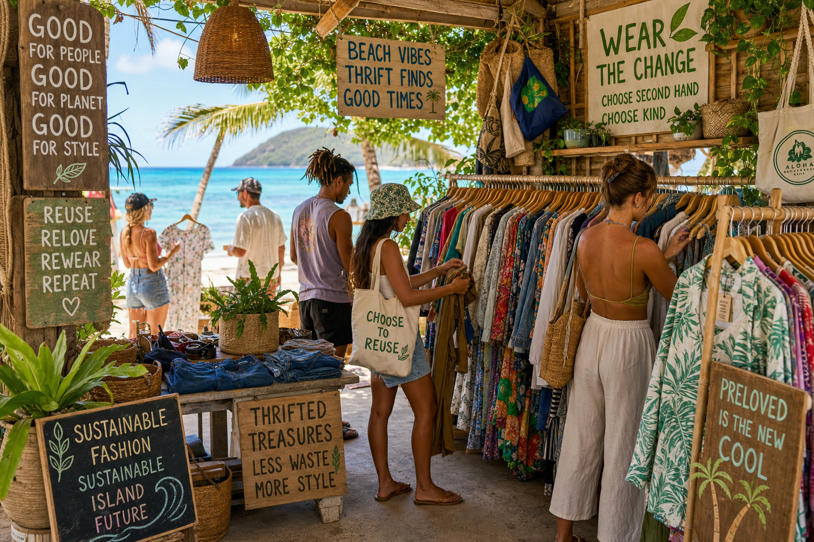

Hawaii faces unique environmental challenges. As a remote island chain in the middle of the Pacific, everything that comes to Hawaii had to be shipped here — and everything that's thrown away must either be landfilled locally or shipped out. This makes sustainability not just an environmental value but a practical island necessity. Nowhere is this more true than in fashion.
The Fast Fashion Problem in Hawaii
Hawaii has a growing problem with textile waste. Tourists often purchase souvenir clothing they never wear again once they're home, and island residents face the same fast fashion pressures as everyone else. The result is enormous amounts of perfectly good clothing entering the waste stream. Kauai's landfill at Kekaha is a limited resource on a small island — every piece of clothing diverted from it matters.
The Beauty of Hawaiian Vintage
One of the best arguments for buying secondhand in Hawaii is the quality of the vintage clothing. Aloha shirts made in Hawaii during the 1950s–1970s were crafted from genuine silk, rayon, and high-quality cotton with construction standards that far exceed most contemporary fast fashion. Buying a vintage Kahala or Reyn Spooner shirt isn't just sustainable — it's actually getting a better product.
Resort Wear Circular Economy
Hawaii has a fascinating resort wear circular economy. Resorts, hotels, and vacation rental owners donate linens, beach towels, and resort clothing to local thrift stores when they upgrade their inventory. This means you can sometimes find high-quality resort wear — monogrammed or not — at thrift prices. We receive regular donations from Kauai's hospitality industry and process them into our rotation.
How to Build an Island Capsule Wardrobe Sustainably
The key is quality over quantity. Three genuinely beautiful vintage aloha shirts from a thrift shop will serve you better than ten fast fashion pieces. Look for natural fibers (cotton, rayon, silk) that breathe in Hawaii's heat. Seek out resort wear in neutral or classic tropical prints that mix and match easily. And embrace the muumuu — there's a reason this garment has been beloved in Hawaii for generations. It's cool, comfortable, modest, and beautiful.